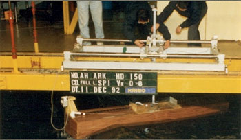

The Bible's description of Noah's Ark stands out as a realistic vessel. The dimensions must have been written down and preserved, in contrast to the cube-shaped "Ark" in the Epic of Gilgamesh. Genesis 6:15 can tell us quite a lot about the accuracy and validity of this part of the Bible.
Somebody knew what they were doing when they came up with the dimensions of Noah's Ark. Had the Ark been taller it could become unstable, longer and it could break, either wider or shorter and it could become dangerously uncomfortable.
In the interactive Flash graphic below, drag the gray ball to alter the outer dimensions of the Ark.
This graphic is based on the range of hull forms tested at the KRISO ship
research center in Korea1. They
analyzed the Biblical proportions and found Noah's Ark to strike a balance between the conflicting
requirements for stability, comfort and strength.
|
 |
Koreans Study Proportions of Noah's Ark Biblical proportions under scrutiny at KRISO in 1992 lImage KACR |
|
|
The Korean tests showed that Noah's Ark had among the best proportions possible. The study was headed by Dr S W Hong, who was principal research scientist at KRISO at the time. He listed the Noah's Ark study alongside other research papers on the company website until as recently as 20062.
The study is rather clinical. For one thing, while Noah's Ark is clearly one of the top performers, it was not manipulated3 to become the outright winner in the final ranking. However, the study certainly answers any skeptic who would claim Noah's Ark is not a feasible wooden vessel.
Dr Hong has since been promoted to director general of MOERI - formerly KRISO.
|
Dr Seon Won Hong Image KORDI/MOERI 2006 |
As the director general of a world class ship research center, Dr Hong has the privilege of expressing his thoughts on the MOERI website (Current Oct 2006). His welcome letter calls attention to the world's oceans and how important they are. To Dr Hong they must be important, because he begins the concluding paragraph with telltale evolutionary language; "Sea is the origin of life...".
Safety Investigation of Noah's Ark in a Seaway could be viewed as an admission by antagonistic witnesses that Noah's Ark is up to the task. The fundamental "first principles" approach of the study makes an excellent foundation for further work.
1. The team of nine research scientists were all on staff at Korea Research Institute of Ships and Ocean Engineering (KRISO) in Daejeon, Korea. Undertaken in 1992, the results were published in Korean the following year. The paper was translated to English and published Creation Ex Nihilo Technical Journal 8(1):26–35, 1994. See Safety Investigation of Noah's Ark in a Seaway. Return to text
2. When this list was updated during 2006, no papers earlier than 2000 were listed. Return to text
3. Despite the popular belief that science is totally objective, even the most "cut-and-dry" analysis may require some assumptions to be made. For example, in the comparative analysis of Noah's Ark, the choice center of gravity and draft is somewhat flexible (within constraints of what would be reasonable for that type of cargo). Since this study compared the relative performance of each hull, these "flexible" assumptions tend to cancel each other out. Perhaps the only place where Noah's Ark could be artificially promoted is in the choice of weighting factors for the combined stability/seakeeping/strength index. However, the outcome is not particularly sensitive to major changes to these weights. See Comments on the paper. Return to text